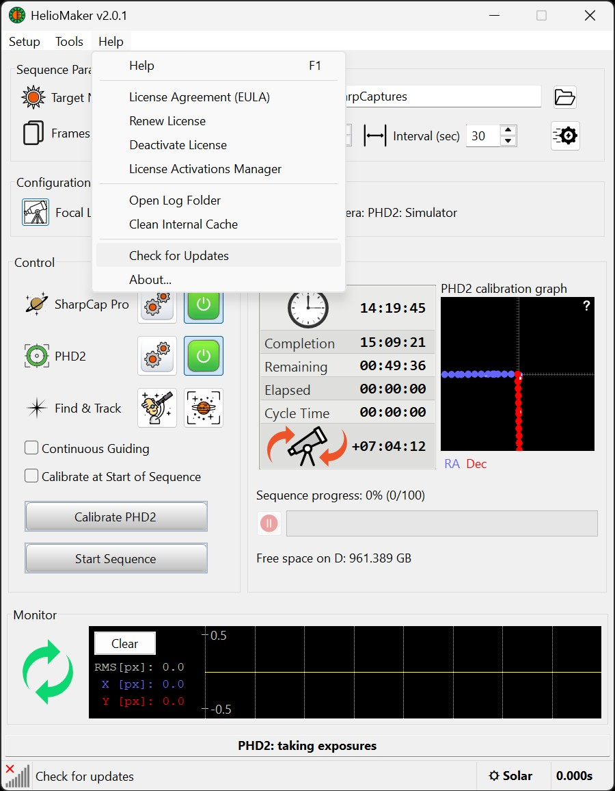
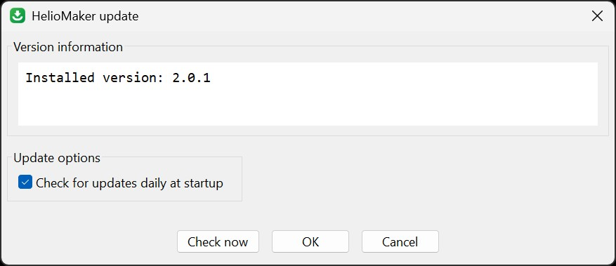

HelioMaker can automatically check for new releases, download, and install them without leaving the application. You can trigger a manual check at any time via Help → Check for Updates.
From the main menu select Help → Check for Updates. This opens the Update dialog:

Click the Check now button. HelioMaker will:
After clicking Download, HelioMaker fetches the installer package. Once downloaded, the button label changes to Install.

When you click Install, HelioMaker will:
You can enable or disable daily checks at startup by toggling the Check for updates daily at startup option.